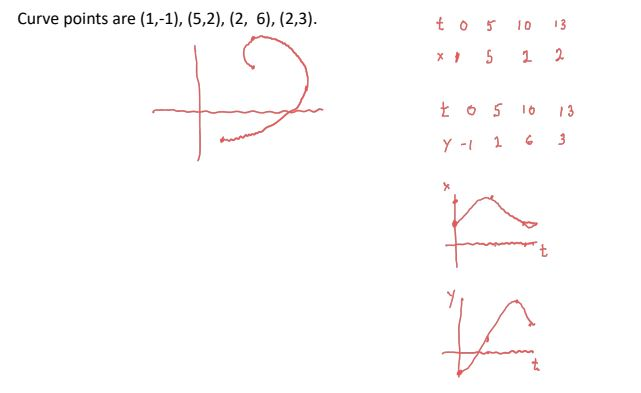
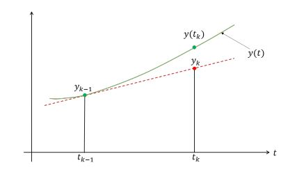
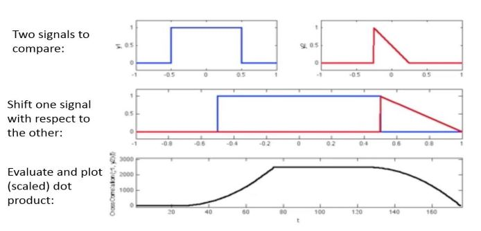
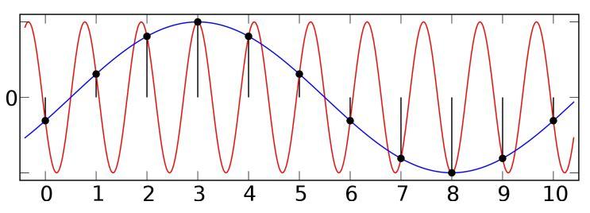
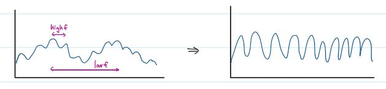
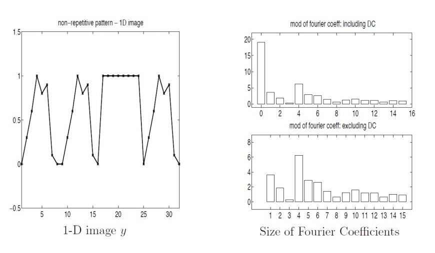
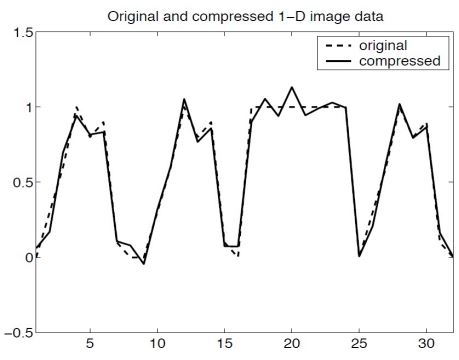
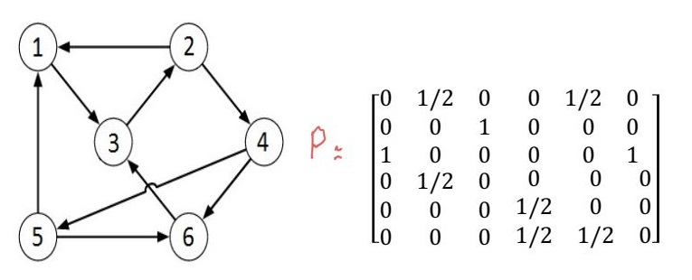
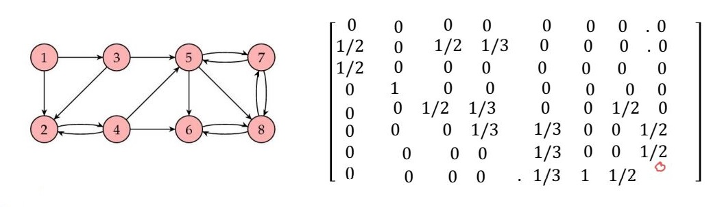

import numpy as np
defIn(alpha, n):
I = np.log((1 + alpha) / alpha)
for n in np.arange(1, n+1):
I = 1./n - alpha*I
return I
In(0.5, 100) # 0.006644371123395131
In(2, 100) # 6058010443603.891 weird
Strange since In=∫01x+αxndx≤∫011xndx=n+11 if 0≤x≤1 and α>1. and we should have I100≤1011.
if x and y are of the same sign then |x+y|=|x|+|y| then the relative error ≤(2E+E2)
if x and y are of the opposite sign and nearly the same size then |x+y| is very small, so the relative error is very large (this is called catastrophic cancellation, why the first way of computing e^-5.5 is wrong)
Week 2. May 17
Polynomial interpolation
interpolation: given n points (x's distinct), find a nice function that go through the points.
nice means polynomial (of degree at most n-1)
nice means spline
points might not be distinct
vandermonde system
with n points (x1,y1),...,(xn,yn) and distinct xi's and a polynomial p(x) of degree at most n-1 satisfying p(x1)=y1,...,p(xn)=yn results in n equations with n unknowns. In matrix form this is
with each Si(x) a polynomial of degree at most 3 satisfying
S(xi)=yi
S(x)∈C2
remark. cubic spline interpolation is not unique.
n points => n-1 intervals, and each interval has 4 unknowns (deg 3 poly) => 4(n-1) unknowns
we have 2(n-1)+2(n-2) conditions
for every interval, S(xi)=yi on both sides => 2(n-1) conditions
S' continuous (n-2 joining points, their derivative has to match) => (n-2) conditions
S'' continuous => (n-2) conditions
so 2 more unknowns than conditions □
we can use boundary conditions to let the result be unique.
defn.(natural): S′′(x1)=S′′(xn)=0.
defn.(clamped): S′(x1)=s1 and S′(xn)=sn where s1,sn are given in advance.
defn.(periodic): S′(x1)=S′(xn) and S′′(x1)=S′′(xn) (assuming y1=yn).
defn.(not-a-knot): S1′′′(x2)=S2′′′(x2) and Sn−1′′′(xn−1)=Sn′′′(xn−1).
forcing first two polys are same, and last two polys are same
eg. by using cubic hermite for each interval [xi,xi+1], we have
Si(x)=ai+bi(x−xi)+ci(x−xi)2+di(x−xi)3
and Si(xi)=yi,Si(xi+1)=yi+1,Si′(xi)=si,Si′(xi+1)=si+1, where si,si+1 are unknowns. from here we know S interpolates the points and the derivative is continuous. to let second derivative be continuous, we also have Si′′(xi+1)=Si+1′′(xi+1) for i=1,...,n−2. note
suppose we want natural boundary conditions: S′′(x1)=S′′(xn)=0.
this is the same as S1′′(x1)=Sn−1′′(xn)=0. combine the equations for {S1′′,c1,d1} and {Sn−1′′,cn−1,dn−1} we have additional two eqs.
3y1′=2s1+s2,3yn−1′=2sn+sn−1
note the coefficient matrix looks like diagonal and each row has 2 or 3 non-zero values, and it takes O(n) to determine s1,...,sn.
parametric curves
given n points (x1,y1),...,(xn,yn) with xi's not distinct. we look for a curve C(t)=(x(t),y(t)),t1≤t≤tn that goes through the points. steps:
get parameter values t1,...,tn
separate x and y into two distinct interpolation problems:
find x(t) that interpolates (t1,x1),...,(tn,xn)
find y(t) that interpolates (t1,y1),...,(tn,yn)
how to find parameter values?
use t1=0,t2=1,...,tn=n−1
use arc length: t1=0,ti+1=ti+(xi+1−xi)2+(yi+1−yi)2
to plot the curve C(t):
determine a set of parameter values τ0,...,τN,N>>n
plug τi into x(t),y(t) to get χi,φi's, then plot the points (χi,φi).
eg.

Week 4. June 1
ODEs
eg.(population model) suppose p′(t)=rp(t),p(t0)=p0 where r is constant, the solution is p(t)=p0er(t−t0).
general first order ODE
defn. if dtdy=f(t,y) or y′(t)=f(t,y(t)) where t0≤t≤tf, f is a function of two variables t and y, then f is called system dynamics function.
initial value problem (IVP):
let y=[y1,...,yN] and f(t,y)=[f1,...,fN] (function of N+1 variables), t0≤t≤tf given
⎩⎨⎧dtdyy(t0)=f(t,y)=a
what is y?
eg.(Predator-Prey)x′(t)=x(t)(a−αy(t)),y′(t)=y(t)(−b+βx(t)) where a,α,b,β are constants (the populations interact; when there are many prey, predators increase in number ... until they eat too many).
suppose at t=tk−1, we have yk−1≈y(tk−1). at t=tk, we use yk−1 to compute yk.
using geometric

let hk−1=tk−tk−1 be the time step size. by ode, we have y′(tk−1)=f(tk−1,y(tk−1)), we have approximation y′(tk−1)=slope of y at tk−1≈hk−1yk−yk−1. we assume our approximation is correct so we replace y(tk−1) by yk−1 so the approximation is:
this requires one function evaluation for each time step.
using taylor expansion
local truncation error: assume timestep is constant h and we have a method computing yk. then yk−y(tk)=O(hp+1). the bigger p the better.
by taylor, we have y(tk)=y(tk−1+hk−1)=y(tk−1)+hk−1y′(tk−1)+2!hk−12y′′(ϵk) where tk−1<ϵk<tk. substitute the ode we have y(tk)=y(tk−1)+hk−1f(tk−1,y(tk−1))+O(h2). use the approximation y(tk−1)→yk−1,y(tk)→yk we get the result. and y(tk)−yk=O(h2).
eg. compute
{y′(t)y(0)=sint−cosy(t)=1
we use even interval h=N1 (ie t0=0,t1=h,...,tN=1).
let y0=1
for k=1,2,...,N, do yk=yk−1+h⋅(sintk−1−cosyk−1)
since from forward euler we have y(tk)−yk∗=O(h2), so from taylor of f(tk,y(tk)) as function of y: f(tk,y(tk))=f(tk,yk∗)+O(y(tk)−yk∗)=f(tk,yk∗)+O(h2). hence
how to determine if numerical method likely gives a correct answer?
obvious: run the method with timestamp h, then run again with timestamp h/2. compare answers.
we can combine forward euler and modified euler:
ykFE=y(tk)+Ah2+O(h3)ykME=y(tk)+O(h3)
so we have
local error≈∣Ah2∣=∣ykFE−ykME∣
in general, at every timestamp consider two rules, one for order p, one for order p+1, the local error is the difference between two methods: |local error|=∣Ahp∣=∣yk(1)−yk(2)∣.
if error is too big then reduce timestep h by 2 and repeat.
eg. a common method: runge kutta methods (RKF45)
k1=hf(tn,yn)k2=hf(tn+4h,yn+4k1)k3=hf(tn+83h,yn+323k1+329k2)k4=hf(tn+1312h,yn+21971932k1−21977200k2+21977296k3)k5=hf(tn+h,yn+216439k1−8k2+5133680k3−4104845k4)k6=hf(tn+2h,yn−278k1+2k2−25653544k3+41041859k4−4011k5)yn+1∗=yn+21625k1+25651408k3+41042197k4−5k5 with error O(h4)yn+1=yn+13516k1+128256656k3+5643028561k4−509k5+552k6 with error O(h5)
timestamp control (2)
instead of dividing by 2, we can also do:
suppose we require ∣Ahp∣=∣yk(1)−yk(2)∣ < TOL, at next step we can change the timestep to some h2:
eg. we shoot a golf ball with some initial speed. in the middle of the field there is a wall that goes up and down (h = Acos(wt+y)). whenever ball hits the wall, it stops; whenever it hits the group, it also stops. Event(ball, barrier) = |dist(top of barrier to ball)| - ϵ and = |height of ball| - ϵ. link
defn.fourier series of f(t) is f(t)=a0+a1cos(qt)+b1sin(qt)+a2cos(2qt)+b2sin(2qt)+...=∑k≥0(akcos(kqt)+bksin(kqt)) where q (=T2π) is a constant factor.
ak,bk, or ak2+bk2 measure amount of function/data that repeats k times.
defn. we can write f(t)=∑k=−∞∞ckejkt, where c0=a0,ck=2ak−2bkj,c−k=2ak+2bkj for k > 0.
modulus of ck gives amplitude of given frequency of wave
argument of ck gives that frequency's phase
defn. given N points f0,...,fN−1, discrete fourier transform is the N values F0,...,FN−1 where Fk=N1(f0+W−kf1+W−2kf2+...+W−(N−1)kfN−1)=N1∑n=0N−1W−nkfn, and W=e2πj/N.
we want to show the two operations are inverses. their product should have 1 entries on diagonal and 0 otherwise, use the algebra review above. □
eg. suppose all N points are 1, then:
F0=1
Fk=N1∑n=0N−1W−nk=N1(1−W−k1−W−Nk)=0
eg. suppose fk=2k, then Fk=N1∑n=0N−1(2W−k)n=N1(1−2W−k1−(2W−k)N)=N1(1−2W−k1−2N) (note denominator cannot be 0 since W−k=21).
Week 7. June 21
meaning of dft
given N equally spaced samples of a function f(t) over 0 to 2π, this implies we should keep only N coefficients from the fourier series of f(t):
c−N/2+1,...c−1,c0,c1,...,cN/2
where ∣c−n∣=∣cn∣=2an2+bn2 is the information about f(t) of frequency k. note ∣c0∣,∣cN/2∣ are special. we can approximate the fourier series (which is infinite sum) using these N numbers (we lose some info):
f(t)≈k=−2N+1∑2Nckejkt
we have fk=f(kN2π),0≤k<N and so for each sample fk we have fk=f(tk)=∑n=−N/2+1N/2cnejntk where tk=N2πk. let W=e2πj/N, after some algebra
normally computing F0,...,FN−1 we require O(n^2) operations. now assume N is even, and further more is a power of 2. we can compute them in O(NlogN) steps.
observation. if W is an Nth root of unity, then W2 is an 2N root of unity.
observation. if W is an Nth root of unity, then WN/2=−1. hence we also have WkN/2=(−1)k.
we separate the computation into k=even terms and k=odd terms.
var N = 2 ** m
var W = e ** (2*j*pi / N)
for k = 1, m:
for j = 1, 2**(k-1):
var v = (j - 1) * N
for n = 0, N / 2 - 1:
var wf = W ** -n
var temp = wf * (f[n] - f[n + N/2])
f[n + v] = 1/2 * (f[n] + f[n + N/2])
f[n + v + N/2] = temp / 2
N /= 2
output in reverse binary form // (for 8 nums, F[1] => F[0b001] => F[0b100] => F[4])
signal filtering
basic idea:
transform time/space data into frequencies via fft
manipulate data in frequency domain
transform frequency data into time/space data via inverse dft
eg. given signal 1: sound of both trains and bird sounds. we would like to decompose it into
signal 2 train whistle sounds: low frequency
signal 3 bird sounds: high frequency
correlating two signals
then we want to find M and L such that
region 1: FM<...<FM+N/2 for middle region of high frequencies
region 2: ...<FL,FN−L<... for start and end regions of low frequencies.
defn. given two signals y0,...,yN−1 and z0,...,zN−1, the correlation function is ϕk=N1∑n=0Nyn+kzn,k=0,...,N−1.
typically we want to find the index k such that ϕk is maximized.
if k = n is the maximum value then shifting by n positions gives the best match of data.

wrap-around effects:
correlation assumes two signals are periodic. in practice, input data are not often periodic, giving wrap-around effects
to avoid wrap-around pollution, we pad both arrays with zeros up to twice their original length
padding zeros does not change offset
typically computing correlation takes O(n^2). however we can convert the computation into fourier transform:
algo.
compute fourier transform of y0,...,yN−1 to get Y0,...,YN−1
compute fourier transform of z0,...,zN−1 to get Z0,...,ZN−1
multiply Φk=YkZk
compute inverse ft of Φ0,...,ΦN−1 to get ϕ0,...,ϕN−1
proof.
let Φk be the ft of ϕk, we have Φk=N1∑n=0N−1ϕnW−nk=N21∑n=0N−1∑u=0N−1yu+nzuW−nk.
let yu+n=∑s=0N−1YsWs(u+n), zu=∑v=0N−1ZvWvu, then
defn.fourier frequency is the number of cycles per second = Tk=NkFS, where sampling rate FS=TN = number of discrete samples per second.
if a real input signal contains high frequencies, but the spacing of discretely sampled data points is inadequate, then aliasing occur.

(wagon-wheel effect; stationary rotor of helicopter)
recall for fk=f(kN2π), we have Fk=ck+ck+N+ck−N+ck+2N+ck−2N+..., sums of true continuous fourier series coefficients ck of increasing frequency. so frequencies ck for ∣k∣>2N get aliased to lower frequencies. (?)
to avoid aliasing:
increase sampling resolution to capture higher frequencies
filter before sampling to remove (too) high frequencies so they do not cause aliasing
data compression

consider 1D array of greyscale.

a dominant pattern appears 4 times, so F4 is large. we can discard data with less frequencies.
1D compression strategy:
create an (approximate) compressed version of the image fn by throwing away f∗ 'small' fourier coefficients such that ∣Fk∣ < TOL
run inverse dft to get modified pixels fn∗ to reconstruct the image
discard imaginary parts of fn∗ to ensure new data is strictly real

image processing in 2D
consider 2D image in grey scale with a 2D array X with MN pixels. assume data is scaled so that 0≤X(i,j)≤1.
we move from time/space domain to frequency domain using 2D dft:
Fj,k=MN1n=0∑N−1m=0∑M−1fn,mWN−nkWM−mj=N1n=0∑N−1WN−nk(M1m=0∑M−1fn,mWM−mj)(DFT per row)
where WN is Nth root of unity and WM is Mth root of unity.
the 2D FFT can be computed efficiently using nested 1D FFTs:
transform each row (separately) using 1D fft
transform each column of the result using 1D fft
complexity: O(MN(logM+logN)).
JPEG
break down image into 8x8 blocks - image does not change very much in such small block
transform each block from spatial to frequency domain using 2D discrete cosine transform
Fu,v=c∑n=07∑m=07fn,mcos162n+1πu⋅cos162m+1πv
helps separate image into parts of differing importance
reduce blocks in order to reduce size of higher frequencies
keep F[0,0] separate (DC component)
then reduce size of all other components via quantization table Q
Fnew[j,k] = round(F[j,k] / Q[j,k])
then reduce higher frequency values more ie discard unnecessary info
entropy encoding: treat DC component separate since it is usually large. save first value then determine difference for each block afterwards
convert 2D array into 1D array using a zigzag pattern - compress by skipping 0 continuous values
Week 11. July 19
linear algebra
solving system of linear equations
recall:
elementary matrix is identity matrix with single row operation
row operations are same as multiplication on the left by elementary matrix
given nonsigular matrix A and vector b, solve Ax=b for x.
steps:
LU decomposition: factor A into A=LU where L is lower triangular and U is upper triangular
do gaussian elimination on A keeping operations in L
if E1,...,En are some row operations, then to get an upper triangular U matrix from A, we did En...E1A=U. then A=(En...E1)−1U=(E1−1...En−1)U=:LU.
solve Ly=b
apply same operations to b getting result y (forward solve)
note we get x3=1 directly, then use this to compute x2, then use them to compute x1. we have xT=[−3,2,1].
cost:
factoring A=LU
for first column of A, do row operations to eliminate 2nd to last elements; for second column, eliminate 3rd to last elements, etc. in total (n−1)2+(n−2)2+...+1+0=6(n−1)n(2n−1)=31n3+O(n2) ops.
forward solve: 1+2+...+(n−1)=2(n−1)n=2n2+O(n)
backward solve: same as forward solve
PLU decomposition
LU decomposition does not work when pivot is 0 => we have 0 on diagonal and we need to swap rows to preceed.
⎣⎡0−234305361−29⎦⎤⇒⎣⎡−203340356−219⎦⎤
we need to permute rows => a permutation matrix P so that PA = LU.
steps:
PLU decomposition: factor A into PA=LU where L is lower triangular and U is upper triangular
solve Ly=b′ (b': permuted version of b)
solve Ux=y
start with P set to nxn identity matrix I. whenever we swap a pair of rows during LU factorization, also swap corresponding rows of P, the final P is the permutation matrix (in implementation, we do not store P explicitly).
what happens when pivot is nearly 0? forming akkaik gives number of large magnitude, causing large float point error during subtraction and magnify existing error.
partial pivoting strategy: find the row with entry having largest magnitude in current column beneath current row. swap rows if its entry has larger magnitude than diagonal entry.
eg. consider in 4-digit arithmetic.
{10−5x+y=1x+y=2
pivot is 10−5. multiple first row by 105 we have (1−105)y=2−105⇒(105−1)y=105−2⇒99999y=99998⇒9999y=9999 (truncation) so y=1 and x=0.
if we switch rows, the pivot is 1
{x+y=210−5x+y=1
and (1−10−5)y=1−2⋅10−5⇒y=1,x=1 which is better solution.
Week 12. July 26
conditioning of matrix
we want to recognize when matrix might be ill-formed for solving. this is what would happen if we get one answer for solving Ax=b but significantly different answer when we perturb b slightly. we want to measure the matrix A.
defn.∣∣⋅∣∣ is a matrix norm if
∣∣A∣∣≥0 and ∣∣A∣∣=0⟺A=0
∣∣cA∣∣=∣c∣∣∣A∣∣ for any scalar c
∣∣A+B∣∣≤∣∣A∣∣+∣∣B∣∣ (triangle inequality)
∣∣AB∣∣≤∣∣A∣∣⋅∣∣B∣∣ (show by using 4.)
∣∣Av∣∣≤∣∣A∣∣⋅∣∣v∣∣ (obvious from following defn)
∣∣In∣∣=1
defn. if ∣∣∣∣ is a vector form then we can define a matrix norm by ∣∣A∣∣=maxx=0∣∣x∣∣∣∣Ax∣∣ for any vector x.
prop.
∣∣A∣∣1=maxj∑i=1n∣Aij∣ = maximum column sum
∣∣A∣∣2=∣λ∣ where λ is largest eigenvalue of AA⊺
∣∣A∣∣∞=maxi∑j=1n∣Aij∣ = maximum row sum
when we work in float point environment we get Axnum=bnum. having accurate solution means we want small ∣∣x∣∣∣∣Δx∣∣ where Δx=xexact−xnum, however we cannot measure this relative error because we do not know the exact solution. we can measure the residual ∣∣b∣∣∣∣Δb∣∣ where Δb=bexact−bnum. we want to connect them.
to determine accuracy we want to estimate:
relative change in x due to relative change in b: ∣∣x∣∣∣∣Δx∣∣≤(∣∣A∣∣⋅∣∣A−1∣∣)∣∣b∣∣∣∣Δb∣∣
proof. note we have AΔx=Δb⟹Δx=A−1Δb⟹∣∣Δx∣∣=∣∣A−1Δb∣∣≤∣∣A−1∣∣∣∣Δb∣∣. also ∣∣b∣∣=∣∣Ax∣∣≤∣∣A∣∣∣∣x∣∣⟹∣∣x∣∣1≤∣∣b∣∣∣∣A∣∣. □
relative change in x due to change in A: ∣∣x+Δx∣∣∣∣Δx∣∣≤(∣∣A∣∣⋅∣∣A−1∣∣)∣∣A∣∣∣∣ΔA∣∣ (how to show?)
defn. the condition number of matrix A is denoted κ(A)=∣∣A∣∣⋅∣∣A−1∣∣.
different for different matrix norms
κ≈1: A is well-conditioned
κ≫1: A is ill-conditioned
suppose κ(A)≈βq, from ∣∣x∣∣∣∣Δx∣∣≤κ(A)∣∣b∣∣∣∣Δb∣∣ we estimate
relative error b∣∣Δb∣∣ is at level of roundoff error - eg β1−t ie last digit.
so relative error x∣∣Δx∣∣ magnifies this by βq and so is around βq+1−t ie last q digits.
improving solutions:
recall we wanted Ax=b but get Axnum=bnum, now x=xnum+Δx and b=bnum+Δb so AΔx=Δb. we can solve this equation (cheap as we have done row reduction for A) to get estimate for Δx. then xnew=x+Δx is an improved solution.
page rank
we represent web's structure as a directed graph. nodes represent pages, arcs represent links from one page to another. (out)degree of a node is defined as number of edges leaving that node. web is stored as an adjacency matrix (the degree of node is sum of its column).
local importance: we interpret links as votes: if page j links to page i, this is considered a vote by j that i is important. outgoing links of a page j have equal influence, so the importance that j gives to i is deg(j)1.
2 -----------+
v
+-------------------- 4
v |
5 ------------> 6 <---+
page 4 gives importance of 1/2 to page 5
so if page i has many incoming links, it is probably important.
global importance: what if page j only has one link to it but that page is important? => a node is important if important nodes link to it (this is a bit recursive)
ranking by random surfer model:
user starts at random page (with all pages equally likely) and follows links at random for k steps
user will probably end up on important pages more often
select new start page and follow k random links again. repeat r times.
at the end, we estimate overall importance as Rank(page i)=# visits# visits to i
issues:
large size of web: many pages and links, many iterations
number of steps taken per random surf sequence must be large
major issue: dead end links (stuck on one page)
major issue: cycles in graph (stuck in a closed subset of pages)
we can view actions of random surfer as transition matrix on the web
defn. if the surfer is at node i then all outnodes are equally likely, we define
Pij={deg(j)1,0,link j to i existselse
then probability that the random surfer is at node i after k steps is mi(k)=∑j=1RPijmj(k−1).

defn. let e=[1,...,1]⊺ and d=[d1,...,dR]⊺ where di=1 if i is a dead end node, then R1ed⊺ is a matrix of probabilities which transitions from a dead end node to any other node with equal probability.
we add this to P so it it possible to avoid being stuck at a dead end node
defn. let e=[1,...,1]⊺, then R1ee⊺ is a matrix of probabilities which transitions to any other node with equal probability.
to restart and escape cycles
defn. we define google matrix as M=α(P+R1ed⊺)+(1−α)R1ee⊺ where 0<α<1. so
α is fraction of time random surfer follows links and special action and dead end nodes
1−α is fraction of time random surfer restarts

property.(1) each element of M satisfies 0≤Mij≤1, and columns of M all add to 1. so M is still a markov matrix.
property.(2) if x=[x1,...,xR]⊺ sums to 1, then y=Mx sums to 1.
property.(3) 1 is an eigenvalue of M, so Mx=1x. pf. note M⊺e=e. □
property.(4) if λ1,...,λR are eigenvalues of M then ∣λ1∣,...,∣λR∣≤1. proof. for each eigenvalue λ, we have M⊺v=λv for all v. then for all i, m1iv1+...+mRivR=λvi⟹∣λvi∣≤m1i∣v1∣+...+mRi∣vR∣≤(m1i+...+m1R)max1≤k≤R∣vk∣=1⋅max1≤k≤R∣vk∣, so ∣λ∣≤max1≤k≤R∣vk∣∣vi∣≤1. □
property.(5) M has only one eigenvalue of length 1. all others are less than 1.
property.(6) if M has eigenvalues 1=λ1≥∣λ2∣≥...≥∣λR∣ and x(0)=[R1,...,R1]⊺, then there are eigenvectors vi such that x(0)=∑i=1Rcivi.
page rank algorithm:
let M=α(P+R1ed⊺)+(1−α)R1ee⊺ where 0<α<1
let x(0)=[R1,...,R1]⊺ (start with equal probs)
for k = 1 to stopping criterion:
x(k)=Mx(k−1)
ranking vector is then limk→∞x(k)=:x(∞)
pages with more probability is more important
note eventually Mx(∞)=x(∞), ie we are at a fixed point.
P is sparse while M is dense, but M is special and we can do Mx without dense linear algebra,
first do y=Px via sparse matrix multiplication, ie yi=pi1x1+...+pikxk
similarly we include dead end pages directly via yi←yi+x1+...+xk
so final y=Mx has components yi=α(pi1x1+...+pikxk+x1+...+xk)+R1−α
convergence: by using property 6, we have x(k)=c1v1+∑i=2Rciλikvi→c1v1 as k→∞. second eigenvalue tells us when to stop, and is λ2=α. our stopping criterion is then ∣λ2∣k−1<ϵ. if we have precision 8 and α=.85 we would stop at iteration 114.